Cuatro generaciones de constructores.
Nuestra historia empezó mucho antes de que existiera Aravá. Hoy seguimos el oficio con una mirada nueva.
Bisabuelo, abuelo, padre y hoy nosotros.
Publicaremos las fechas, los nombres y las fotos de cada etapa cuando la familia los confirme.
-
Generación I: Bisabuelo
Época por confirmar
Empieza el oficio: tierra, obra y palabra.
-
Generación II: Abuelo
Época por confirmar
La obra se vuelve empresa en el Quindío.
-
Generación III: Padre
Época por confirmar
Proyectos propios y una forma de construir que se hereda.
-
Generación IV: Hoy
Hoy · Aravá
Aravá: experiencia heredada y una mirada nueva.
Obras de Arquitectura Civil.
Arquitectura Civil S.A.S., la firma que antecede a Aravá, nació en Armenia para responder a la reconstrucción tras el sismo de enero de 1999. Se constituyó en 2003 y desde entonces diseña y construye.
Doce de sus obras, en orden cronológico.
-
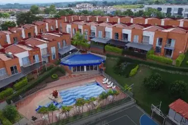
2003–2005
Parque Residencial San Simón
-
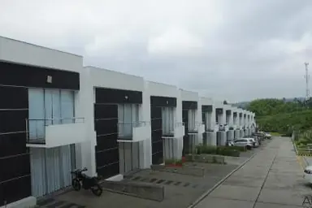
2006–2009
Parque Residencial Santa Clara
-
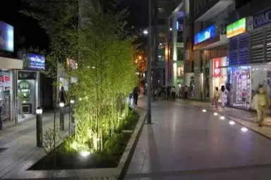
2006–2007
Centro Comercial Cielos Abiertos
-
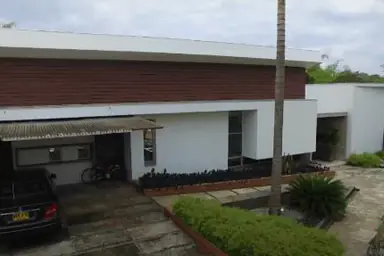
2007–2009
Conjunto Campestre Sierra Morena
-
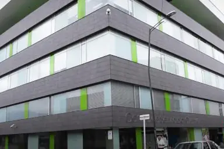
2007–2008
Centro Empresarial del Quindío EDEQ
-
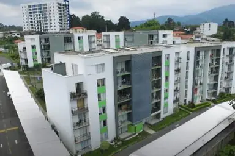
2008–2011
Parque Residencial Santa Catalina
-
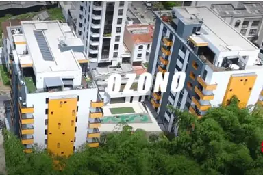
2011–2014
Edificio Ozono
-
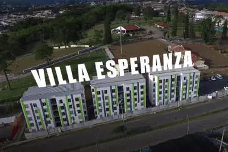
2013–2014
Villa Esperanza (VIP)
-
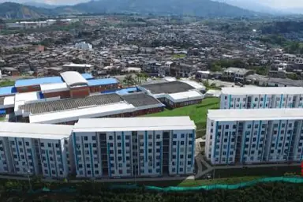
2014–2015
San Joaquín (VIP)
-
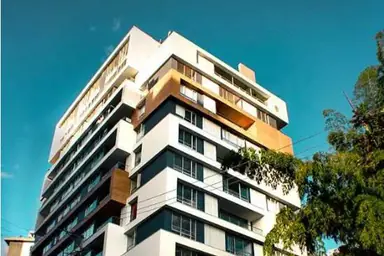
2015–2017
Edificio Panoramika
-
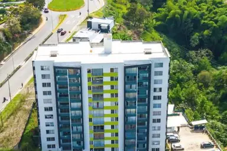
2016–2019
Equilibrio (VIS)
-
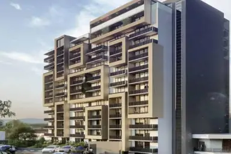
2022–2024
Hito 18 · primera etapa
Fuente: hoja de vida 2024 de Arquitectura Civil, que lista 21 proyectos ejecutados y 2 en ejecución. Entre los demás: Terranova, Metroloft, Consota (VIPA), obras para la Zona Franca del Eje Cafetero, la Institución Educativa Juan Hurtado en Belén de Umbría y las clínicas Médical y El Prado. Fotos del archivo de la firma; la de Hito 18 es un render.
Solo en revisión · faltan fotos en buena resolución de estas obras (las actuales salen del PDF de la hoja de vida)
Premios y reconocimientos.
Otorgados a Arquitectura Civil S.A.S., la firma que antecede a Aravá.
2008
Premio Nacional de Arquitectura Karl Brunner
XXI Bienal Colombiana de Arquitectura, Sociedad Colombiana de Arquitectos. Diseño urbano y paisajismo: peatonalización de la carrera 14, Armenia.
2008
Premio Bienal Panamericana de Quito
XVI Bienal Panamericana de Arquitectura de Quito. Diseño urbano: peatonalización de la carrera 14, Armenia.
2008
Reconocimiento Ambiental CRQ
Corporación Autónoma Regional del Quindío, por buenas prácticas en obra: separación de residuos desde la fuente y conservación de zonas verdes y bosques.
2009
Premio Lápiz de Acero
XII edición. Espacios públicos: peatonalización de la carrera 14, Armenia.
2019
Reconocimiento Camacol Quindío
Por el «Programa ambiental en la construcción»: apicultura, siembra de árboles, huerta orgánica y clasificación de residuos durante la obra.
El equipo de Aravá.
Las personas que hoy hacen Aravá.
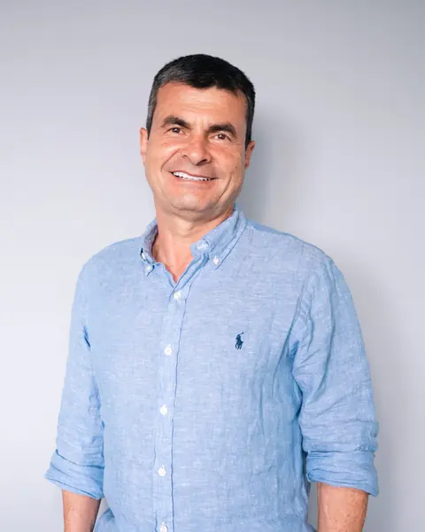
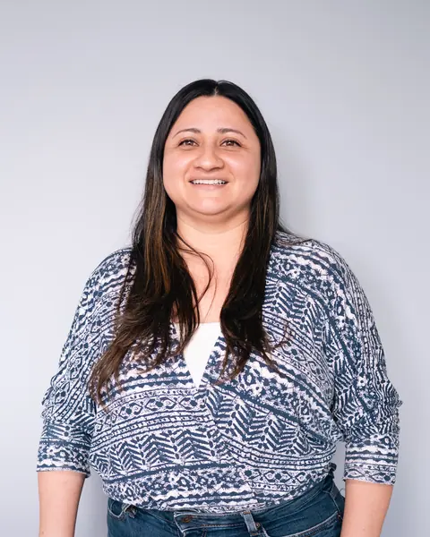
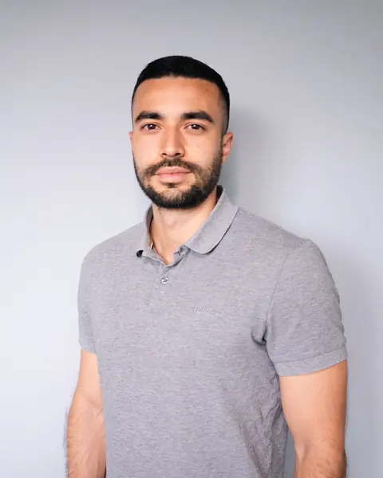
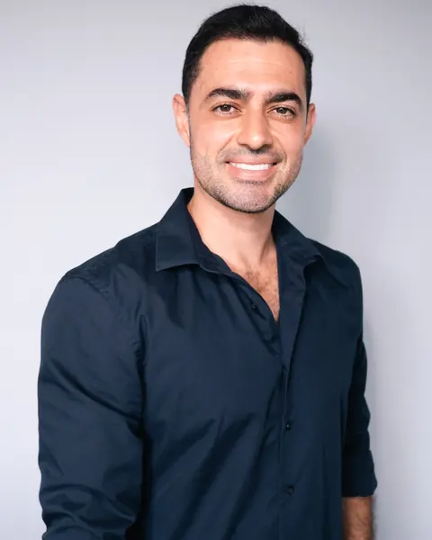
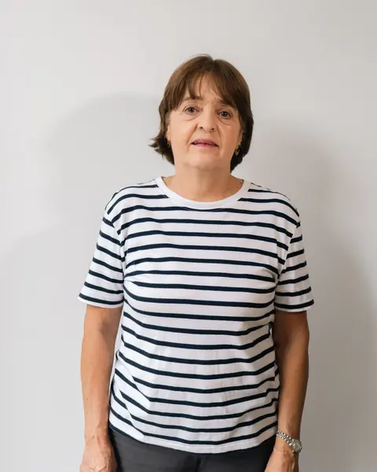
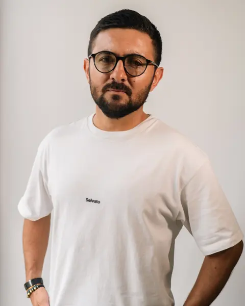
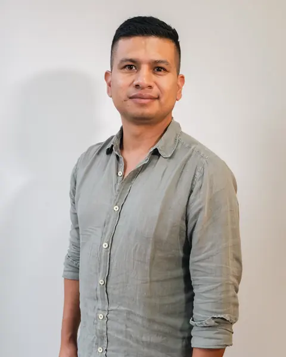
Solo en revisión · espacios reservados
Pendiente: foto del equipo completo. Nombres y cargos sin confirmar: por eso los retratos van sin pie de foto.
Obra terminada, en detalle.
Turco, cocina de un apartamento y salón social con jardineras. Fotografías reales de un edificio terminado.
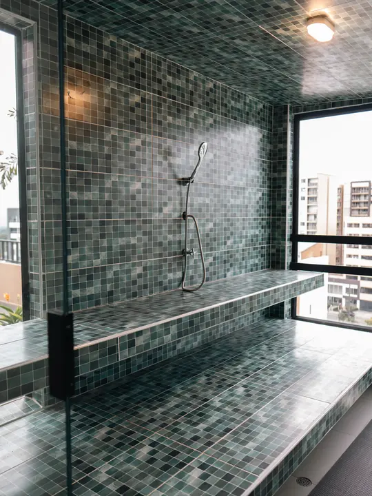
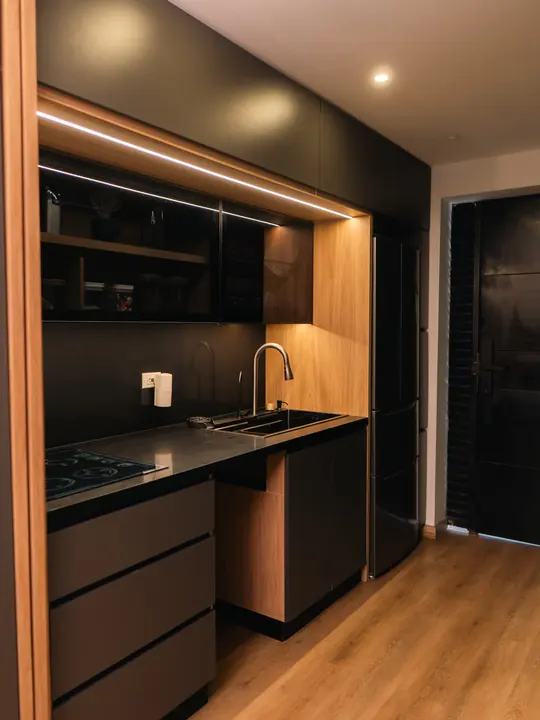
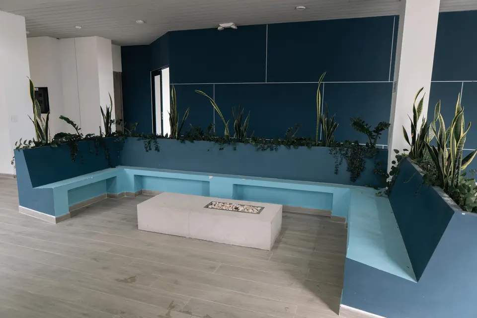
¿Qué significa Aravá?
עֲרָבָה
Del hebreo: extensión de terreno.
«Mucha gente nos llama Arava, incluso de otras formas, pero es Aravá». Con acento en la última a: A·ra·vá.
Donde otros ven un terreno vacío, nosotros vemos todo lo que puede florecer.
«De ahí nace nuestro nombre, Aravá. De creer que cada espacio tiene el potencial de convertirse en algo extraordinario. Transformamos la tierra en lugares donde florece la vida.»
En la tierra
«Es precisamente ahí donde empiezan nuestros proyectos, en la tierra.»
Una proyección
«Tú puedes ver un terreno vacío, pero nosotros vemos una proyección.» Futuras parejas y familias habitando; espacios para transmitir conocimiento, para vivir y para disfrutar en familia.
Florecer
Como el pasaje bíblico del desierto que llega a florecer: «Desarrollamos, construimos y entregamos espacios para que las familias puedan disfrutar.»
Espacios donde la vida pueda florecer.
Referencia bíblica: Isaías 35:1, el pasaje del desierto que florece, donde aparece la palabra עֲרָבָה.
Fuente: reel «Qué significa Aravá», @arava.construcciones, noviembre de 2026 · Ver en Instagram (se abre en una pestaña nueva)
Experiencia heredada, mirada nueva.
«Desde los primeros bocetos hasta la obra finalizada, en Aravá cada detalle importa.»
Diseño
Cada proyecto parte del terreno: cómo se llega, cómo se vive y qué lo rodea.
Vivienda
Apartaestudios y apartamentos en Armenia y Circasia, con experiencia en vivienda de interés social y prioritario (VIS y VIP).
Desarrollo inmobiliario
Desarrollamos proyectos de finca raíz. Las condiciones de cada uno se informan en su página.
Origen
Nacidos en el Quindío, con base en Armenia.
Conocemos el Quindío desde adentro: su tierra, sus pendientes, sus pueblos y su gente.
Es nuestra base y el punto de partida de cada proyecto nuevo.
Conoce lo que estamos construyendo.
Dos proyectos en venta: Hito 18 en Armenia y Montes de Bremen en Circasia.